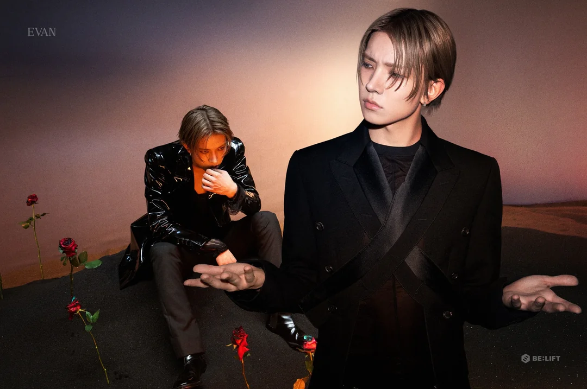

Leaving ENHYPEN
On March 10, 2026, BELIFT LAB announced that Heeseung would leave ENHYPEN to pursue a different musical direction. He remained signed to BELIFT LAB, while ENHYPEN continued as six members. The announcement surprised many fans because Heeseung had been part of the group since their 2020 debut from the K-pop survival show, I-LAND.
How did Fans React?
Many ENGENEs were disappointed by the sudden news and hoped that Heeseung could release solo music without leaving the group. Supporters organized petitions and other campaigns asking BELIFT LAB to reconsider. Other fans chose to support his new direction while continuing to follow ENHYPEN.
His Solo Career as EVAN
Heeseung now performs under the name EVAN, a nickname from his childhood. He released the digital single Ride or Die in June 2026 before releasing his first solo mini album, DEATH OF ME, on September 7, 2026. The album contains eight songs and was released through BELIFT LAB.
Inside DEATH OF ME
DEATH OF ME is about choosing a personal path while dealing with uncertainty, pressure and complicated feelings. EVAN took an active role in making the album, helping with songwriting, composition and production. In an interview with Yonhap, he described the record as a way of showing a more honest side of himself.
The title song, Death of Me, is a pop R&B track about staying true to yourself. The album moves between several genres including R&B sounds like 'Noise,' alternative rock like 'Ride or Die,' and soft dream-pop like 'Going Home.' This variety allows EVAN to explore a wider range of music as a solo artist.
The Eight Songs
1. Not Enough
2. Noise
3. Ride or Die
4. Death of Me
5. Twilight
6. Immature
7. Overflow
8. Going Home
A Different Debut
The album is not EVAN's first recording, but it is his first complete solo mini album. He uses these eight tracks to explore ambition, self-expression, and moving forward. The title track got its own music video and performance video. Heeseung's departure is still emotional for some fans as they were his 'bias' in ENHYPEN, but the release of 'DEATH OF ME' has given listeners a fuller look at his personal musical interests and decision. ENHYPEN continues as a group of six, and EVAN continues as a solo performer.
Sources
Soompi - Departure and Fan Response
Back to Home